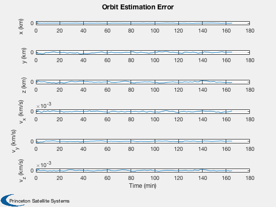
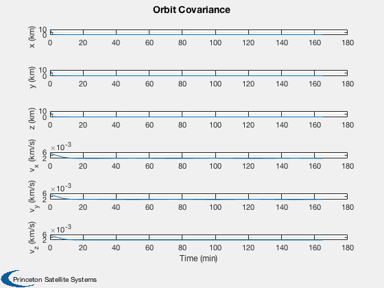

Demonstrate orbit estimation using a UKF with full state measurements.
The measurement is the full state. You can try UD Factorized or full covariance filters. ------------------------------------------------------------------------- See also Plot2D, TimeLabl, RK4, UKF, UKUDF -------------------------------------------------------------------------
Contents
%-------------------------------------------------------------------------- % Copyright 2006, 2009 Princeton Satellite Systems, Inc. % All rights reserved. %--------------------------------------------------------------------------
Select the filter
%------------------ filter = @UKUDF; % UD factorized filter (square root) filter = @UKF; % Full covariance matrix filter
Simulation parameters
%----------------------
nSim = 100;
sigY = [1;1;1;0.01;0.01;0.01];
xP = zeros(18,nSim);
mu = 3.8600436e5;
r = 7000;
x = [r;0;0;0;sqrt(mu/r);0];
dT = 100;
Position and velocity uncertainty
%----------------------------------
rU = 10;
vU = sqrt(mu/r) - sqrt(mu/(r+rU));
State estimate at start
%------------------------
d = struct;
d.x = [r+rU;0;0;0;sqrt(mu/(r+rU));0];
Covariance based on the uncertainty
%------------------------------------ d.p = diag([rU^2;rU^2;rU^2;vU^2;vU^2;vU^2]); d.int ='RK4'; d.rHSFun ='RHSOrbitUKF'; d.measFun ='GXUKF'; d.integrator = @RK4; d.measFunData = []; d.alpha = 0.8e-3; d.kappa = 0; d.beta = 2; d.dY = 6; d.dT = dT; d.rHSFunData = struct('mu',mu,'a',[0;0;0]); d.rM = diag(sigY.^2); d.rP = 1e-2*d.rM;% Measurement is noisier than the plant d = filter('initialize', d ); t = 0; for k = 1:nSim % Plotting %--------- xP(:,k) = [d.x; x; diag(d.p)]; % Update the RHS %--------------- x = RK4( d.rHSFun, x, dT, t, d.rHSFunData ); % Measurement %------------ y = x + sigY.*randn(6,1); t = t + dT; % Kalman Filter %-------------- d.t = t; d = filter( 'update', d, y ); end
Create a time sequence for the x-axis
%--------------------------------------
[t,tL] = TimeLabl((0:(nSim-1))*dT);
y-axis labels
%-------------- yL = {'x (km)' 'y (km)' 'z (km)' 'v_x (km/s)' 'v_y (km/s)' 'v_z (km/s)' };
Plot
%----- Plot2D( t, xP(1:6,:) - xP(7:12,:), tL, yL, 'Orbit Estimation Error' ); Plot2D( t, sqrt(xP(13:18,:)), tL, yL, 'Orbit Covariance' ); %-------------------------------------- % PSS internal file version information %-------------------------------------- 